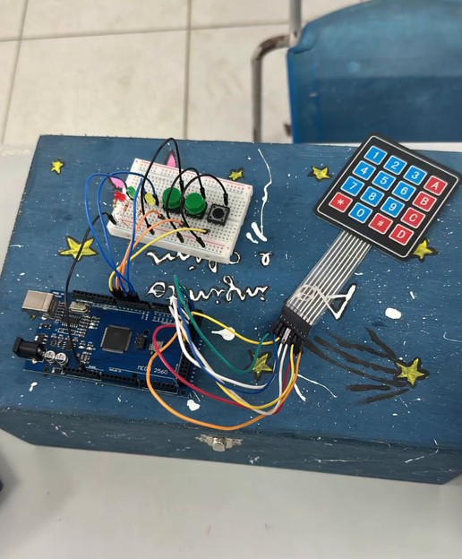

Educação · Protótipo em desenvolvimento
Menos interrupções. Mais foco na aula.
O I/O Regulator é uma proposta para organizar o registro de saídas e retornos de alunos durante a aula, para o professor seguir ensinando.

Uma aula pode ser interrompida
No dia a dia
Quando alguém sai da sala, a aula é interrompida para autorizar, anotar ou lembrar quem saiu e quando voltou.
A proposta
Um dispositivo simples em que o aluno registra a própria saída e o retorno, para facilitar essa tarefa para o professor.
Como funciona, em três passos
Este é o fluxo proposto para o dispositivo.
-
O aluno informa a matrícula
Ao sair, digita a matrícula no teclado.
Digitando -
O dispositivo registra
Anota a saída. Ao voltar, o aluno informa a matrícula de novo e o retorno é registrado.
Registrado -
O tempo fora é calculado
A partir dos dois horários, conforme a lógica proposta.
Tempo fora
Conheça o dispositivo
Toque nos pontos da imagem para ver cada parte do conceito.
Escolha um ponto
Cada número na imagem abre uma explicação curta.

A primeira montagem
Feita com Arduino, protoboard, fios, LEDs, botões e teclado numérico para testar a ideia. O dispositivo compacto ao lado é um conceito, ainda em desenvolvimento.
O projeto nasceu na Liga Jovem.
O que buscamos
Continuidade da aula
Menos pausas para controlar quem sai e quem volta.
Registro organizado
Saídas e retornos anotados de forma padronizada.
Autonomia do aluno
Quem precisa sair faz o próprio registro.
Organizar não é impedir.
O I/O Regulator não proíbe nem barra a saída. Ele busca registrar e organizar esse fluxo, para que o aluno possa sair e o professor possa continuar ensinando.
Perguntas frequentes
Ele impede o aluno de sair?
Não. O objetivo é organizar o registro, não proibir.
Como o aluno usa?
Digita a matrícula ao sair e informa de novo ao retornar.
O dispositivo do conceito já existe?
Ainda não. O que existe hoje é o protótipo real; o dispositivo compacto é um conceito em desenvolvimento.
Onde ficam guardados os dados? Há painel ou relatórios?
Essa parte ainda não está definida. Quando houver novidades, elas serão divulgadas aqui.
Em que estágio está o projeto?
Protótipo e conceito em desenvolvimento.
Qual problema você quer resolver?
O I/O Regulator é um exemplo de como a tecnologia pode simplificar o cotidiano. Veja outras soluções do Virto.
Ver todas as soluções